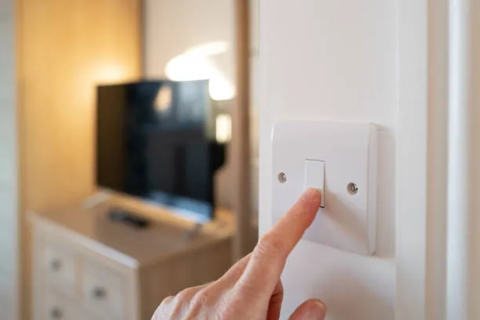

Au quotidien, l’utilisation de l’électricité est essentielle à notre vie. Elle nous permet d’alimenter nos différents appareils électroniques, mais elle est aussi à l’origine des sources de lumière de nos pièces de vie. Les installations électriques de notre quotidien nous facilitent la vie et nous apportent un certain confort.
Pour autant, il peut parfois arriver de nombreux problèmes dus à ces installations électriques : plombs qui sautent et qui entraînent une coupure de courant, tableau électrique qui n’est pas adapté à notre domicile etc…
Il y a sûrement plusieurs phénomènes à l’origine de ces problèmes d’électricité récurrentes. L’une de ces raisons reste tout de même, et pour beaucoup de cas, un problème de fusible.
Les fusibles sont des organes de sécurité présents dans le tableau électrique. Ils assurent notre sécurité au quotidien en coupant le courant électrique dès qu’une surcharge ou un court-circuit interviennent. Un fusible qui saute est souvent le résultat d’une surcharge, car trop d’appareils électriques sont branchés en même temps sur le même circuit.
Il se peut également qu’un des appareils électriques que vous possédez soit défectueux. Une fois branché, celui-ci peut faire sauter les plombs de votre maison. Il faut porter une attention très particulière à ces appareils électriques, qui peuvent causer de graves dommages au sein de votre domicile. Le risque zéro n’existe pas, et malgré la présence de fusibles, vous n’êtes pas à l’abri d’une faille dans votre circuit électrique.
Puisque ces accidents domestiques arrivent fréquemment, et qu’il n’est pas rare de voir que vos plombs ont sauté, voici les étapes vous permettant de changer un fusible qui a sauté.
Comment changer un fusible qui a sauté ?
Avant de penser à changer un fusible qui ne fonctionne plus, il est important d’identifier son tableau électrique. Beaucoup de tableaux électriques ne possèdent aujourd’hui plus de fusibles, qui ont été remplacés par les disjoncteurs. Les normes obligent, depuis 2015, à posséder des tableaux électriques possédant des disjoncteurs et non des fusibles.
Si votre tableau électrique est récent, et qu’il ne comporte pas de fusibles, cet article ne pourra malheureusement pas vous aider, bien que vous pourrez apprendre quelques notions importantes. Lorsque vous envisagez de toucher votre tableau électrique, ici pour changer un fusible défaillant, il est impératif de COUPER LE COURANT. Cette mesure est plus que vitale pour éviter tout accident.
- Reconnaître les fusibles : Les fusibles, sur un tableau électrique, sont parfois facilement identifiables. Lorsqu’ils sont grillés, les fusibles possèdent une pastille témoin, qui s’allumera rouge si elle est grillée. Attention : cette pastille rouge n’est présente que sur des tableaux électriques avec des fusibles cartouches. Concernant les autres tableaux électriques, il se peut que le fusible soit à fils, il vous faudra donc chercher le fil correspondant et le déclipser délicatement. Vous pouvez également, si vous possédez le matériel, utiliser un multimètre pour rapidement et facilement trouver le fusible qui a sauté.
- Retirez les fusibles : Il existe plusieurs types de fusibles, fusibles à cartouche ou à broche. En fonction de ces caractéristiques, vous devrez soit : déclipser ou enlever le fusible d’un petit socle de protection.
- Insérez vos nouveaux fusibles : Maintenant que vous avez enlevé le fusible ou les fusibles ne fonctionnant plus, vous pouvez placer vos nouveaux organes de sécurité. Assurez-vous que les fusibles sont identiques à ceux que vous avez enlevé précédemment. Dans le cas contraire, vous rencontrez toujours des problèmes de court-circuit.
Les opérations d’électricité sont des opérations dangereuses, qui peuvent parfois coûter la vie. Ne vous aventurez pas dans des réparations si vous n’êtes pas sûrs de pouvoir les réussir. Faire appel à un électricien est la solution la plus judicieuse en cas de panne de courant, ou problème de tableau électrique, vous pouvez trouver des électriciens en visitant ce site. Les électriciens sont généralement disponibles 7/7j et 24/24h, car ils savent que certains problèmes domestiques sont urgents à traiter. Les experts en électricité, par leurs connaissances et leur expertise, sauront vous redonner sécurité et confort en un rien de temps.